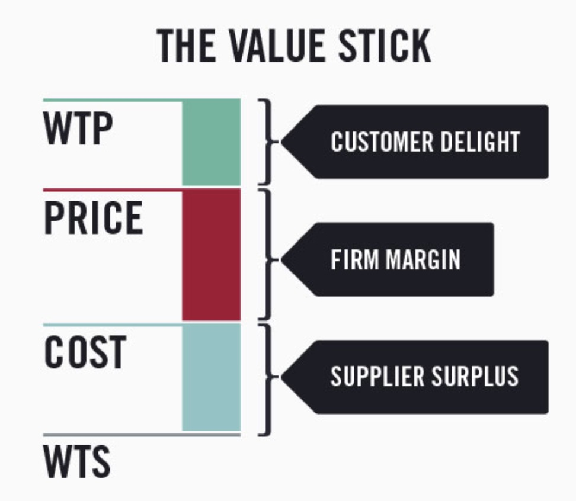
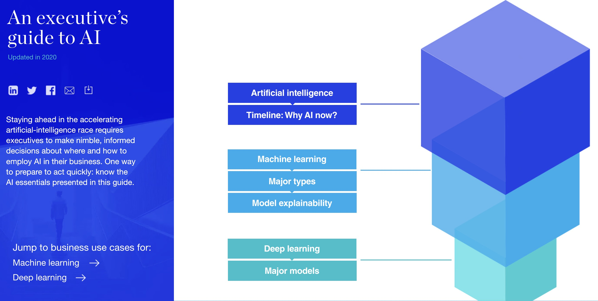
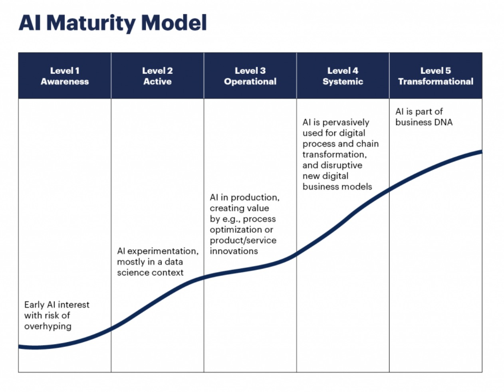
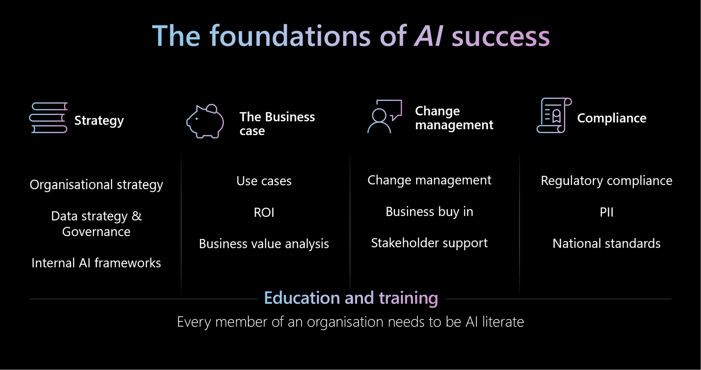
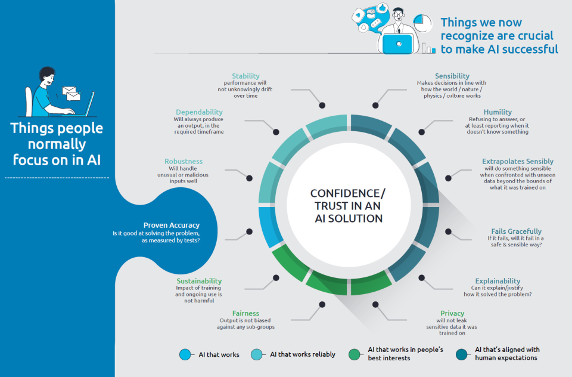
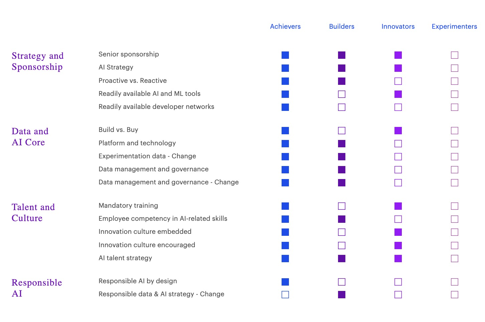
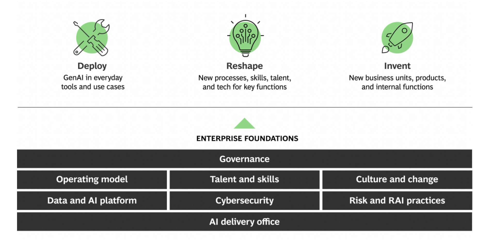
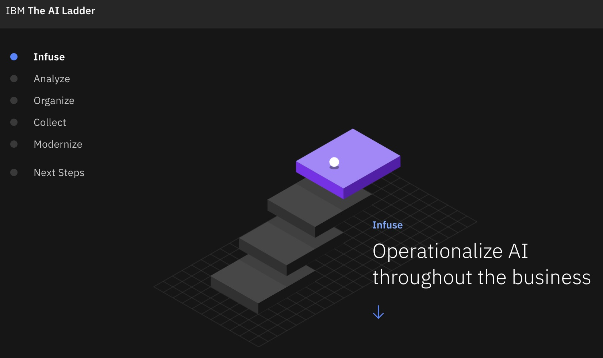

5 Identify Your Strategy
To help you decide on AI investments, we must first find your AI strategy. This is part one of our mini-series on how to identify, communicate, and mobilize your Gen AI strategy.
The Trap of Hype-Driven Implementation
If your AI strategy centers around a chatbot where customers can “ask anything,” you’re not alone. Many companies are adding AI everywhere without a clear strategy. This is a mistake. When everyone does the same thing, no one stands out. Remember, a business’s strategy is to gain a competitive edge. This advantage comes from having unique, delightful products that are hard to copy.
Good strategy involves three key elements:
- A clear diagnosis of your organization’s challenges
- A coherent plan of action
- Alignment of resources to address these challenges
The worksheet below will guide you through each of these elements using an example.
Identify Your Strategy Worksheet
The best AI strategy amplifies your company’s strengths. Through this worksheet, you’ll learn how to create one.
Using ACME E-Commerce as our guide, we’ll walk through a step-by-step process to:
- Diagnose where your business is now
- Create a guiding policy that sets you apart
- Sequence coherent actions that move you forward
- Communicate your strategy effectively
Remember: It’s not about using AI everywhere. It’s about using it where it counts most for your business. Let’s walk through an example.
Learning from an example company
Let’s look at a made-up company called ACME E-Commerce (ACME) to see how good planning works. We’ll act like we’re the leaders of this company.
ACME’S Profile:
- Founded in 2019, ACME is a Software-as-a-Service (SaaS) company specializing in e-commerce solutions tailored for small businesses.
- Offers a user-friendly, affordable, and scalable e-commerce platform.
- It lets customers easily build and grow their online presence, without being nickel-and-dimed.
| Category | Description |
|---|---|
| Mission | To empower small businesses by providing accessible e-commerce tools that facilitate digital growth. |
| Business Strategy | Be the one stop shop for SMBs that lack extensive technical expertise or large budgets. Target startups and entrepreneurs who are underserved by larger e-commerce platforms by competing on price and 24/7 customer service. |
| Product Strategy | Create a simple, user-friendly platform that needs no tech skills. Charge a single unwavering price of $15 a month with no sales caps and comparable transaction fees for payments. Subscription fees must always be 30 - 50% less than the equivalent plan on Shopify, WooCommerce, BigCommerce, or Wix. |
| Product | ACME is a single product company. “ACME Storefront” includes website building tools, shopping cart functionality, secure payment processing, and inventory management as an all-in-one. |
2023 EOY Simplified Financials:
| Metric | Values |
|---|---|
| Annual Revenue | $120M growing 18% YoY. |
| Revenue Sources | ~20% from subscriptions, ~80% from payment transaction fees. |
| Gross Retention Rate | 92% |
| EBITDA | $13M |
| Customers | 130,000 |
| Headcount | 350 |
2023 EOY Color Commentary
- We missed expectations of 24% YoY top line growth .
- Our competitors Shopify, BigCommerce, WooCommerce and Wix were busy adding AI into their products. In particular, the Shopify Magic release in April 2023 generated headlines.
- Our EBITDA margin is healthy as is our gross retention rate.
- Our revenue per employee (RPE) is $342K and average revenue per customer (ARPC) is ~$920.
It’s now January 2024 and we have to finalize our Annual Operating Plan for sign-off by the next board meeting in Mid-February. Our board members are eager to review and comment on our plans to update our strategy to take with AI.
What do we do?
Step 1 → Start with a transparent diagnosis
A doctor always diagnoses before suggesting a treatment. We must first name the disease. No matter performance, start here.
Let’s consider the following areas:
- Macro environment: What conditions have changed over the last year?
- Internal Capabilities: How strong is our internal team and where are the gaps?
- Competitive Advantage: What sources of power can we amplify with AI?
- Pricing Strategy: Is it right to be profit maximizing, penetrating or skimming?
- Ecosystem Strength: How can we improve through or with partners?
| Area | The clear impact of AI |
|---|---|
| Macro environment | Barriers to entry: It has made it easier for startups to start. They can now innovate faster and at lower cost. Industry convergence: has blurred lines. It has allowed tech firms like Google and Amazon to enter healthcare and finance. |
| Internal Capabilities | Talent: Incumbents are struggling to hire and upskill. The need for data scientists, AI engineers and AI Literate leaders has created a wide talent gap. Decision Making: AI tools can help incumbents optimize pricing, inventory, and marketing on-the-fly. This creates a need for faster decision-making. Organizational Structure: To use AI in decision-making, you must question hierarchical, bureaucratic organizational models. |
| Competitive Advantage | Process Power: AI speeds up product development by massively reducing cycle times. Incumbents that rely on long R&D cycles are at a disadvantage. Cornered Resources: AI has amplified the value of proprietary data. The more you can ethically collect, the better your use of AI becomes. Brand: AI driven improvements in customer experience (e.g. a seamless shopping experience) can elevate and improve your brand’s equity. Switching costs: Personalization and historical data lock-in can make it harder for your customers to leave for another competitor Network effects: AI enhanced personalization helps to attract more users and create more engagement driving greater value for the entire service. Scale Economies: Automation of the productivity zone — reduction of costs across manufacturing, customer service and logistics enables companies to produce more with less. Counter positioning: Real time AI powered services undermine traditional manual methods. Example: Lemonade uses AI to process insurance claims instantly. |
| Pricing Strategy | Profit Maximization: personalized, dynamic pricing is being implemented much to customer chagrin. Airlines, Uber and even Burger King are implementing this. Penetration Pricing: advanced customer segmentation to identify high LTV cohorts to target with low introductory pricing is on the rise. Skimming: improved demand forecasting using AI is suggesting when to lower prices to attract the next wave of more price-sensitive customers while still maximizing revenue. |
| Ecosystem Strength | Time to Market: Many incumbents are realizing they can’t build all AI capabilities in-house. Instead, they are forming partnerships with AI startups or acquiring them to infuse innovation into their business models. |
ACME’s Diagnosis
Diagnosis Summary: Our business strategy has always relied on penetration pricing. We aim to gain an edge by counter positioning against the competitive field to attract our ICP. We haven’t invested enough to boost our brand equity against the others. This moment to leverage AI provides new opportunity.
Diagnosis Detail: Reasons our growth was impacted in 2023
- U.S. Monetary policy contraction and rising interest rates slowed the rate of new business starts in our target market. We haven’t been as sensitive to this as we should have.
- Our talent position is strong — 10% of employee base is an AI engineer, data scientist or data engineer.
- Competitors have used their resource advantage to invest in features like: AI enhanced site editing, automatic SEO optimization with AI, advanced analytics for merchants and other core app integrations.
- While our core product has advanced, we’ve kept our subscription pricing the same.
- Our NPS remains extremely high but our cost to serve has increased and our gross margins have decreased YoY.
üí° Diagnosis: Pro Tips
- This diagnosis is best done first with five to six senior leaders at your organization. A time-bound, recorded dialogue is a great way to generate a first draft. It can be transcribed and refined on paper.
- It’s tempting to try to do too much. Instead, first name and unpack your sources of competitive advantage. This focus is because it is where to concentrate AI application.
- Self honesty is the best policy. You usually won’t have more than two sources of world-class competitive advantage.
- After your first draft, get help from other executives. It’s best to assess your internal capabilities and team next.
- Your diagnosis, no matter how complex your business, should fit on a single page or less.
- Once your draft is done, circulate to the next level of leaders in your organization for review and comment.
Step 2 → Synthesize your guiding policy
With a diagnosis in hand, it can be tempting to want to apply AI everywhere, don’t do this.
As an executive you must ensure your organization works toward a small set of high leverage outcomes.
And that value creation happens in only two ways:
| Ways to increase value | Visual |
|---|---|
1. Increase customers’ willingness to pay 2. Decrease employees’ or suppliers’ willingness to sell. |
 |
ACME’s New Guiding Policy
It’s rare to change the mission of a company and so in this case we don’t focus on it. We’ll focus on two of the most important components our business and product strategy. As a refresher, for ACME:
- Business strategy: to be the one stop shop for SMBs that lack extensive technical expertise or large budgets.
- Product Strategy: create a simple, user-friendly platform that needs no tech skills. Charge a single price of $15 a month with no sales caps and comparable transaction fees for payments
We know where our current source of competitive advantage has been (i.e. Counter Positioning) and have insights into the future where we can look to create new competitive advantage with AI.
The diagnosis is an instruction manual.
Guiding Policy Summary:
Create new durable advantage by becoming the de-facto e-commerce brand of choice by charging $0 platform subscription fees for all SMB customers. Update our product strategy to reflect this. We’ll use AI in two main ways moving forward:
- To increase our ability to amplify our more aggressive penetration pricing strategy with internal AI customer segmentation and targeting
- To expand our single product offering with AI SEO tools to ensure SMBs rank in search results.
| Why this works | Mistakes we avoided |
|---|---|
| We need to focus on top line growth to succeed. This requires growing our percentage share of customers in the hyper competitive e-commerce store market. | We could have tried to alter our business strategy — “AI’fying” in a way that would be a thinly veiled attempt to capture interest. |
| Our customers have always chosen ACME based on our low cost value proposition. We know we need to own this. | We could have tried to match all of the AI features that our competitors are now offering instead of focusing on a single area that. |
| Our competitors with higher percentages of revenue coming from subscriptions can’t afford to match this product strategy revision further solidifying our counter positioning source of power | We could have decided to use AI to offer customer support chatbots to reduce our costs to supplement our 24/7 phone based support which has always been core to ACME. |
| Our brand’s strength is directly correlated with the success of our merchant’s. Using AI to create a new product offering that helps them rank higher in their respective markets is a better use of our limited resources than improving our WYSIWYG editor with AI for example. | We could have tried to raise subscription prices to superficially grow revenue. |
üí° Guiding Policy: Pro Tips
- Your guiding policy is not a vague statement but a clear and actionable response to the problem identified in the diagnosis.
- You should be able to ask yourself: Does this policy provide a framework for addressing the root challenges?
- Make sure your guiding policy does not specify every tactical detail. It is to be used to narrow down a field of possibilities.
- Guiding policies create choices about what not to do. Ensure yours does.
- Strong guiding policies exploit your organizations unique strengths and sources of power.
- If there are changes to your business strategy they should be evolutions and not revolutions except in the most severe of circumstances.
Step 3 → Define your coherent actions
This is where you get to defining the work. Far too many executives jump to step 3 without a firm diagnosis and guiding policy. This is a mistake.
The keyword here is coherent. Actions must stem from your guiding policy and reinforce one another. They are not a random set of initiatives. They are cooridinated and designed to work in harmony.
They also must be sequenced but not as a laundry list.
Let’s now turn our attention back to ACME.
ACME’s Coherent Actions
Summary
- Launch $0 subscription fee for SMB customers to drive growth through aggressive penetration pricing.
- Implement AI-powered customer segmentation and targeting to maximize customer acquisition efficiency.
- Develop AI SEO tools for SMB merchants to improve search visibility and enhance ACME’s product differentiation.
- Optimize customer support with AI tools while maintaining 24/7 phone support, a key brand differentiator.
- Leverage AI for real-time personalization and conversion optimization to elevate merchant success.
- Form strategic partnerships with AI startups to accelerate feature development without overextending resources.
- Enhance data collection to continually improve AI-driven tools and insights for merchants.
| Action | What | How | Why it’s coherent |
|---|---|---|---|
| 1. Launch $0 Subscription Fee Initiative for SMB Customers | Eliminate the $15 monthly subscription fee to attract more small businesses, particularly those that may be price-sensitive or undecided between ACME and competitors. | • Communicate the new pricing strategy aggressively through targeted marketing campaigns. • Leverage existing customer data to pinpoint segments that would benefit most from this pricing change. • Align all product and customer service messaging to emphasize the “no-cost” platform approach while maintaining competitive transaction fees. |
This action directly supports the guiding policy’s focus on aggressive penetration pricing by creating a clear, differentiated offer that competitors with high subscription revenue dependence will struggle to match. |
| 2. Implement AI-Powered Customer Segmentation and Targeting | Use AI to identify high-value customer segments that are most likely to convert and benefit from the $0 subscription fee offering. | • Develop machine learning models to analyze customer data and predict potential high-LTV (lifetime value) customers. • Use these insights to create targeted advertising campaigns and personalized messaging for prospective customers. • Focus marketing spend on these segments to maximize the ROI on customer acquisition. |
This action enhances the penetration pricing strategy by focusing acquisition efforts on the most promising segments, maximizing the impact of the pricing change. It also amplifies the guiding policy’s emphasis on AI-driven growth. |
| 3. Develop and Launch AI SEO Tools for SMBs | Create and integrate an AI-driven SEO optimization tool into ACME Storefront that helps small businesses improve their search engine rankings without needing technical expertise. | • Collaborate with AI engineers and product managers to develop an intuitive SEO tool that requires no technical know-how from users. • Roll out the new feature with a clear tutorial, in-platform guidance, and dedicated customer support. • Market the new feature as a core differentiator for ACME compared to competitors. |
This action directly supports the guiding policy’s focus on expanding the product offering by adding high-value AI features, which also enhances ACME’s brand by helping SMBs succeed through better online visibility. |
| 4. Optimize Customer Support Costs Without Sacrificing Quality | Implement an AI-driven internal support system to streamline operations, but without replacing ACME’s 24/7 phone support, which is a core differentiator. | • Introduce AI tools for customer support teams, such as AI-driven knowledge bases, to reduce the time spent resolving common issues. • Train customer support representatives on using these tools to improve efficiency and service quality. • Monitor customer satisfaction and retention rates to ensure that the quality of support remains a key differentiator. |
This action helps reduce operational costs (important given increased cost-to-serve) without undermining the core service model that differentiates ACME from competitors. |
| 5. Leverage AI for Real-Time Personalization and Conversion Optimization | Use AI to provide real-time personalization features for ACME merchants, helping them create more tailored shopping experiences for their customers. | • Integrate AI algorithms to analyze customer behavior and dynamically suggest product recommendations, discounts, and personalized offers for merchants’ stores. • Offer merchants real-time analytics tools that provide actionable insights on their store’s performance and customer preferences. • Focus on rolling out these features in stages, ensuring seamless integration into the existing platform. |
This action taps into AI’s potential to improve customer experience and supports the brand-building element of the guiding policy, helping ACME merchants succeed and further differentiating ACME from competitors. |
| 6. Form Strategic AI Partnerships to Expand Capabilities | Partner with AI startups or service providers to accelerate the development of cutting-edge AI features, without building everything in-house. | • Identify startups or AI companies that specialize in e-commerce or SMB-focused tools that align with ACME’s product strategy. • Negotiate partnerships to integrate their tools into ACME Storefront (e.g., AI-driven inventory management, dynamic pricing suggestions). • Focus on partnerships that provide long-term value and alignment with ACME’s core customer base of small businesses. |
This action supports the ecosystem strength component of the diagnosis, allowing ACME to bring advanced AI capabilities to its platform quickly while maintaining focus on core competencies. |
| 7. Enhance Data Collection to Strengthen AI Models | Collect more structured and unstructured data from customers and merchants to fuel future AI-driven insights and personalization features. | • Introduce opt-in data collection features that allow merchants to share additional data on their customers and sales patterns. • Ensure compliance with data privacy regulations to maintain trust while enhancing the value of the data collected. • Use this data to continually refine and improve AI-driven tools such as customer segmentation and SEO recommendations. |
This action ties into the cornered resources advantage, where proprietary data collection and use amplify AI’s value for ACME’s competitive edge. |
üí° Coherent Actions: Pro Tips
- If you can’t draw a direct line between your actions and the policy, reconsider.
- Don’t try to do everything. Prioritize actions that have the greatest potential to move the needle.
- Coherent actions aren’t just about individual projects. Cross-functional collaboration is key to making sure actions complement, not conflict.
- Prioritize and stage your actions based on logical dependencies. Some initiatives will pave the way for others to succeed, so make sure you tackle them in the right order.
- Coherent actions are most powerful when you have a feedback loop. Set up metrics and checkpoints to track progress, learn from what’s working, and adjust your actions if needed.
- Stay focused on no more than 10 actionto avoid spreading yourself thin.
Step 4 → Communicate your strategy
In this new AI era your strategy needs to be explicitly communicated. “Execution eats strategy for breakfast” is no longer singularly true.
It does not hold up against today’s rapid technological disruption.
If you’re not headed in the right direction, execution alone won’t be enough. You need to bring your people along with you.
⚠️Top Mistakes to avoid
- Lacking clarity and simplicity. It’s easier to overload your message with jargon, complex ideas or too many objectives and it can be your death knell.
- Failure to tie your strategy together. Disconnected initiatives that don’t tie back to the mission of your business will cause employees to hesitate to embrace.
- Not engaging key stakeholder early enough: If people feel that a new strategy was created without their input, they will be skeptical of its relevance.
- Focusing only on the positive: Employees will lose trust if the communication feels overly optimistic. This is the core reason to include the honest diagnosis into your final communication.
- Overloading with information: providing too much detail at once overwhelms and reduces emphasis on the most critical elements. This is especially relevant to organizations who try to “AI-ify” every part of their business.
üéÄ Putting everything in this guide together
The “Business on a Page” approach is a tried and true practical framework designed to simplify and clarify an organization’s strategy. The concept is part of a larger body of work focused on organizational health and effective leadership, highlighted in Patrick Lencioni’s book The Advantage.
It focuses on answering six critical questions:
- Why Do We Exist? (Mission)
- How Do We Behave? (Core Values)
- What Do We Do? (Business Strategy)
- How Will We Succeed? (New Strategic Decisions)
- What Is Most Important Right Now? (Sequenced Actions)
- Who Must Do What? (Roles & Responsibilities)
The benefits of using this approach are in its clarity, simplicity, focus, transparency and consistency. As a framework, it works for you in helping to avoid the top mistakes.
ACME’s Business on a Page
Given the work we’ve done together through this case, we can now synthesize the Why, What and How onto a single page.
| Question | ACME Example |
|---|---|
| Why Do We Exist? | Why do we exist Mission: To empower small businesses by providing accessible e-commerce tools that facilitate digital growth. |
| What Do We Do? | What do we do We provide a SaaS e-commerce platform for small businesses to easily create and manage online stores. |
| How Will We Succeed? | How will we succeed? By creating new durable advantage by becoming the de-facto e-commerce brand of choice by charging $0 platform subscription fees for all SMB customers. We’ll use AI in two main ways moving forward: - To increase our ability to amplify our more aggressive penetration pricing strategy with internal AI customer segmentation and targeting - To expand our single product offering with AI SEO tools to ensure SMBs rank in search results. |
| What Is Most Important Right Now? | What is most important right now? Grow our customer base and 2024 revenue by more than 25% YoY via the following seven cooridinated actions: 1. Launch $0 subscription fee for SMB customers 2. Implement AI-powered customer segmentation and targeting 3. Develop AI SEO tools for SMB merchants 4. Optimize customer support with AI tools 5. Leverage AI for real-time personalization 6. Form strategic partnerships with AI startups** 7. Enhance data collection |
| Who Must Do What? | - CMO to lead new marketing messaging into the market communicating our updated product strategy - CTO to integrate AI SEO tools into the platform; - Sales to drive onboarding of new customers |
By integrating all of these steps to you will already be a step ahead of your competitors. Your deep hands on understanding of your business coupled with the right approach is worth more than any “AI strategy Framework” that a large consulting company will try to sell you.
For reference, here are some of the frameworks that large consulting firms will try to sell you:
AI Strategy Frameworks
| Framework | Organization | Overview | Example |
|---|---|---|---|
| AI Strategy Framework | McKinsey | • Strategic Alignment • Data Strategy • AI Capabilities and Talent • Change Management |
 |
| AI Maturity Model | Gartner | • Level 1: Awareness • Level 2: Active Experimentation • Level 3: Operationalized AI • Level 4: Systemic • Level 5: Transformational |
 |
| AI Transformation Framework | Microsoft | • Strategy • Business Case • Change Management • Compliance • Education and Training |
 |
| AI Factory Framework | Capgemini | • Identify the Right Use Cases • Prototype Development • Scale AI Solutions • Optimize and Iterate |
 |
| AI Strategy | Accenture | • Strategy and Sponsorship • Data and AI core • Talent and culture • Responsible AI |
 |
| Three-Layered AI Strategy | BCG | • Deploy: AI as a Business Driver • Reshape: AI as a Platform for Growth • Invent: AI Transformation Enabler |
 |
| AI Ladder Framework | IBM | • Modernise • Collect • Organize • Analyze • Infuse |
 |
{kind=link}
What’s next?
If the next chapter, we will discuss how to effectively communicate your strategy.